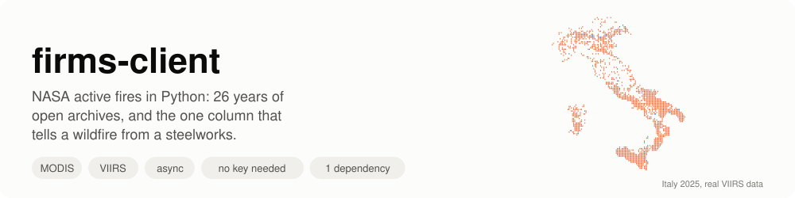
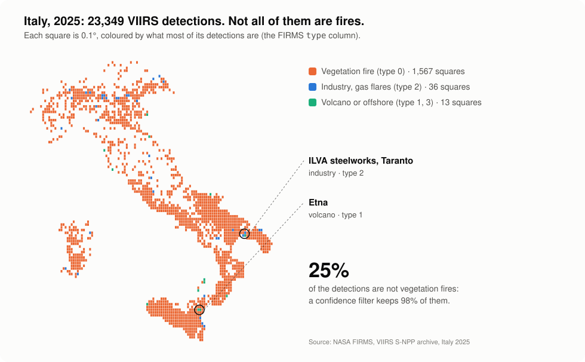
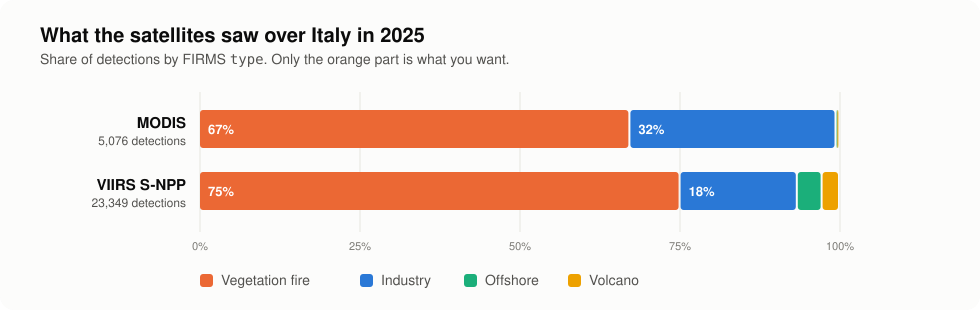
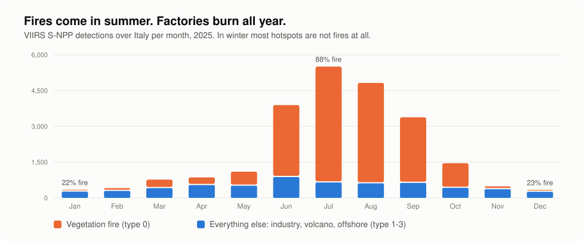
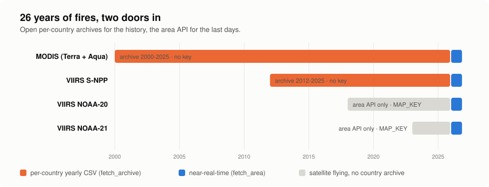

NASA FIRMS · Python 3.12+ · Apache-2.0
Every active fire seen from space since 2000, in a few lines of Python.
firms-client downloads the open per-country FIRMS archives (no account, no key),
queries the near-real-time area API, and does the parsing that tells a
vegetation fire from a steelworks. One dependency: httpx.

What it does
Small, typed, honest about the data
Built for researchers, data engineers and civil-protection teams who want FIRMS data in a notebook or a pipeline, without the e-mail order form.
📦Open yearly archives
MODIS from 2000 and VIIRS S-NPP from 2012, per country, with no Earthdata login and no key.
💾Never download twice
Archives are saved in a persistent data directory (FIRMS_DATA_DIR) and read from disk next time.
⚡Near-real-time API
The last 1-5 days over any bounding box, about 3 hours after the overpass, with a free MAP_KEY.
🔥Fire or factory?
Every detection carries its FIRMS type: vegetation, volcano, industry, offshore.
🎚️One confidence scale
MODIS percentages and VIIRS l/n/h judged by one rule.
🛡️Errors that look like errors
A missing year is None; a bad key or an error page served with HTTP 200 raises FirmsError.
🧪Pure functions too
URLs and parsing are plain functions, if you bring your own HTTP stack.
🪶Light
One dependency, mypy --strict, 100% test coverage, tests that never touch the network.
Quick start
A country's year, no key needed
pip install firms-clientimport asyncio
from collections import Counter
import httpx
from firms_client import ARCHIVE_PRODUCTS, fetch_archive, select
async def main() -> None:
async with httpx.AsyncClient(timeout=120) as client:
for product in ARCHIVE_PRODUCTS:
rows = await fetch_archive(client, product, 2025, "Italy")
if rows is None: # that year is not published (yet)
continue
fires = select(rows) # vegetation fires, nominal confidence or better
types = dict(sorted(Counter(r.detection_type for r in rows).items()))
print(product.slug, len(rows), "detections", types, "->", len(fires), "fires")
asyncio.run(main())modis 5076 detections {0: 3414, 1: 21, 2: 1635, 3: 6} -> 3315 fires
viirs-snpp 23349 detections {0: 17533, 1: 633, 2: 4277, 3: 906} -> 14880 firesThe CSVs are now in ~/.cache/firms-client/: run it again and nothing is downloaded.
Or the last days, with a MAP_KEY
The archive runs up to the previous year. For the last days, get a free MAP_KEY and ask the area API:
from firms_client import fetch_area, select
ITALY = (6.0, 36.0, 19.0, 47.6) # west, south, east, north
rows = await fetch_area(client, MAP_KEY, "VIIRS_SNPP_NRT", ITALY, days=3)
fires = select(rows, min_frp_mw=1.0)Fire or factory?
Not every hotspot is a fire
A satellite sees heat, not fire. Steelworks, refineries, gas flares, volcanoes and offshore platforms are hot every day of the year, and they come through at high confidence, because they really are hot.
type | Constant | Meaning |
|---|---|---|
0 | VEGETATION_FIRE | presumed vegetation fire |
1 | ACTIVE_VOLCANO | active volcano |
2 | STATIC_LAND_SOURCE | other static land source: industry, gas flares |
3 | OFFSHORE | offshore |

On Italy, about a quarter of the VIIRS detections are not vegetation fires, and 98% of those pass a nominal-confidence filter. Without type == 0, the most "burnt" square kilometre in the country over the whole archive is the ILVA steelworks in Taranto, with 3,308 fire-days.


Two things no filter fixes: crop-residue burning is a real vegetation fire (type 0), and only land cover can set it apart; and FIRMS is presence-only, so no detection does not mean nothing burnt.
How it works
Two doors in: archives and area API

| Per-country archive | Area API | |
|---|---|---|
| Function | fetch_archive, download_archive | fetch_area |
| What | one country, one whole year | any bounding box, 1-5 days per query |
| Key | none | free MAP_KEY |
| Latency | up to the previous year | about 3 hours |
| Processing | standard (SP), with type | near-real-time |
| Cached on disk | yes | no |
Reference
API at a glance
Every async function takes your httpx.AsyncClient: timeouts, proxies, retries and pooling stay yours.
| Name | Kind | What it does |
|---|---|---|
fetch_archive(client, product, year, country, directory=None) | async | one year of a country, parsed; None if not published |
fetch_archive_csv(…) | async | the same, as raw CSV text |
download_archive(…) | async | the CSV's Path in the data directory, downloaded if missing |
fetch_area(client, map_key, source, bbox, *, days=1, on_date=None) | async | near-real-time detections over a bbox |
select(hotspots, *, vegetation_only, min_confidence, min_confidence_pct, min_frp_mw) | pure | keep what looks like a fire |
parse_csv(text) | pure | CSV text → list[Hotspot] |
confidence_level(raw) | pure | MODIS % or VIIRS level → "low" / "nominal" / "high" |
is_hotspot_csv(text) | pure | is this a hotspot CSV, or an error page? |
archive_url, archive_filename, area_url, archive_years | pure | URLs, file names, year ranges |
default_directory() | pure | FIRMS_DATA_DIR, else ~/.cache/firms-client |
FirmsError | exception | FIRMS answered, but not with a hotspot CSV |
Full details, recipes (fire history, fire-days per km², GeoJSON, a wildfire trigger) and the traps we already fell into are in the README.
What's next
From hotspots to answers
An MCP server so agents can ask FIRMS questions, a learned static-source mask for near-real-time data that has no type, fire events instead of pixels, and alert bulletins grounded in computed numbers.